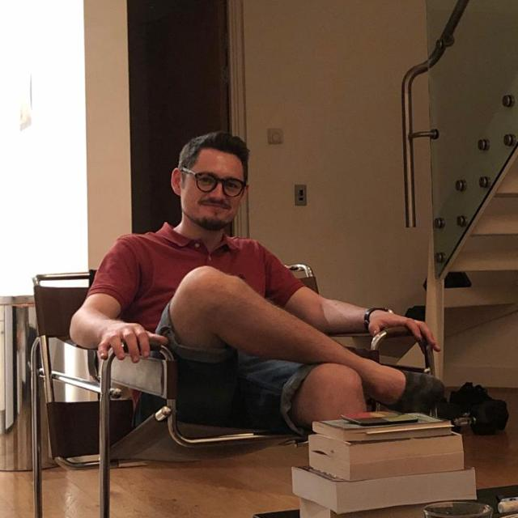

Robert Patrick Murtagh
BCL. BA. MSC.

Overview
Once lawyer-in-training, Samuel Beckett Doctoral candidate (ABD), decadal
English Instructor, viral influencer,
now a clean-code enthusiast, a syntax stickler, who's
looking for his space between angle brackets.
Education
- 2019-2020 University of Almería - PhD English Literature (paused indefinitely).
- 2016-2017 University of Edinburgh – MSc
English Literature & Modernity: 1900 to the Present.
- 2015 International House Dublin – Pass B CELTA.
- 2011-2015 University College Dublin – First Class Honours
BA (International) Spanish & English.
- 2014 Second Language Teaching & Learning
(Core Module of the MA in Applied Linguistics).
- 2007-2010 University College Cork – BCL
Bachelor of Civil Law.
Career Highlights
English Instructor - Al Jazirah Institute of Science & Technology (ADVETI), Abu Dhabi
Aug 2022 - Aug 2023
- Provided exceptional EmSAT-focused tuition as per ADVETI's mission of empowering
Emiratis
with the competencies needed to contribute to the Nation's future development
through workplace
focused, lifelong technical and vocational education
- Acted as Campus NearPod Administrator facilitating more interactive and engaging
lessons backed
by instructional design strategies for an optimal learning experience.
-
Nov 2018 - Aug 2021
- Modelled a hands-on environment that promoted learner engagement & participation
- Identified student needs & guided learners to help achieve their learning objectives
- Successfully transitioned to online learning, becoming proficient in the use of platforms
including: LMS, Microsoft Teams, Quizizz, Kahoot!, Padlet. ClassDojo, WordWall, Quizlet.
-
Sept 2015 - Jul 2016
- Provided over 1100 hours of Cambridge Exam Preparation from KET to CAE
- Gained extensive experience with eBeam software and iPacks (interactive whiteboard)
- Developed professionally through bi-monthly reviews & semestral training.
Ongoing Study
- The Complete 2024 Web Development Bootcamp, The App Brewery:
HTML, CSS, Javascript, Node, React, PostgreSQL, Web3 and DApps.
- CS50's Introduction to Computer Science, Harvard University (via edX):
Scratch, C, Arrays, Algorithms, Memory, Data Structures, Python, Artificial
Intelligence, SQL, HTML, CSS, JavaScript, Flash, Cybersecurity.
Publications
- (Book Chapter)““Half in Love”: The Translation and Reception of Samuel Beckett in Spain.”
Edited by José Francisco Fernández and Sardin, Pascale, in Translating Samuel Beckett Around
the World. Palgrave Macmillan, 2021.🎓
- (Book Review) “Frasier: A Cultural History” (Darowski & Darowski. London: Rowman & Littlefield).
Miscelánea: a Journal of English and American Studies, vol 60, 2019, 177- 180. 👨🏻💻
Awards & Honours
2012 Awarded University College Dublin Ad Astra Scholarship for Academic Excellence.
Other
Online CV version 1.0 (only HTML)
© Robert Patrick Murtagh. All rights reserved.